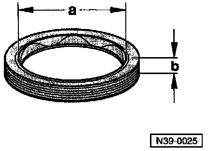
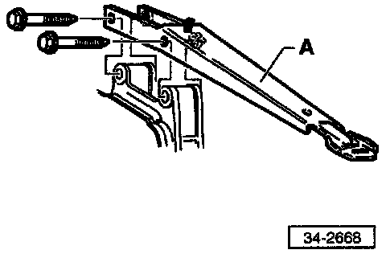
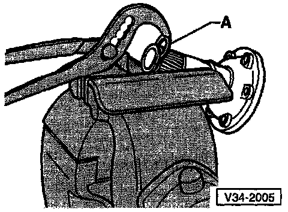
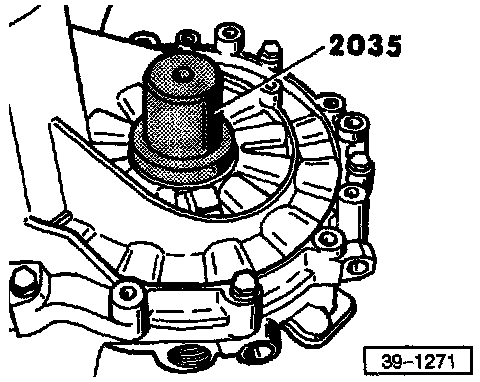
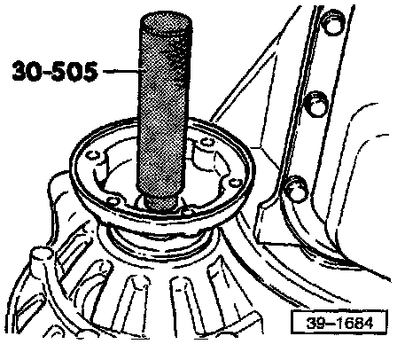

Transmissions Without Springs Behind Axle Flanges
Identification of Seal
- Diameter -- a = 40.0 mm (1.575 in.)
- Height -- b = 10.0 mm (0.394 in.)
Removal
- Turn steering completely to right (full-lock)
- Disconnect axle shaft from axle flange
^ Tightening Torque: Axle shaft to axle flange 45 Nm (33 ft lb)
- Press axle shaft upward as far as possible and support with block of wood, or equivalent, under shaft
CAUTION: Avoid damaging surface finish of axle shaft.
NOTE:
- Additional Steps for Removal of Left Side Seal.
- Remove wheel
^ Tightening Torque:
Wheel to wheel hub 110 Nm (31 ft lb)

- Remove transmission support (A) (where applicable). Disconnect coolant overflow reservoir and lay it aside for access to the support
^ Tightening Torque:
Transmission support to transmission 45 Nm (33 ft lb)
Transmission support to transmission mount 50 Nm (37 ft lb)

- Position chisel or spacer (A) beneath axle flange and pull flange (right or left) from differential gears by turning bolt (B) (B = a previously removed housing bolt)
NOTE: If the axle flange shaft falls to come out straight, use two spacers (A), and bolts (B), positioned opposite each other. Tighten both bolts alternately and evenly.
- Withdraw axle flange oil seal using VW 681 extractor lever
- Remove axle flange (either side)
Installation

- Clamp axle flange shaft in vise (fitted with protective jaws)
- Press old circlip out of flange shaft groove by installing new circlip (A)
CAUTION: Always replace axle flange circlip.

- Drive in new axle flange oil seal until flush
- Fill space between sealing lip and dust seal with multi-purpose grease

- Drive in axle flange using 30-505 mandrel
- Check transmission oil, if necessary top off to lower edge of filler opening